Administración de Empresas · ID 1144631 · NRC 69821
Soy de Bogotá. Me gusta el deporte y la tecnología, y me interesa aprender constantemente para fortalecer mi formación personal y profesional.
Eilyn Mariana Rodríguez Gelvez
Ingeniería Industrial · ID 992028
Vivo en Cúcuta, Norte de Santander. Soy una persona comprometida con mi formación personal y profesional, caracterizada por la responsabilidad, la dedicación y el deseo constante de aprender.
Pedro Luis Ruiz Gómez
Ingeniería de Software · ID 1063406
Me considero una persona responsable y amigable. Me gustan los videojuegos, salir con mis amigos y comer.
Edwar Iván Alba Jerez
Ingeniería de Software · ID 1065135
Soy estudiante de Ingeniería de Software. Me apasiona la tecnología y creo que puede acercar a las personas; por eso me motiva compartir lo que sé con mi comunidad y aprender de cada encuentro.
¿Con qué comunidad o grupo social van a trabajar?
Trabajaremos con vecinos de los barrios donde vive cada integrante del grupo: personas que quieren aprender a usar la tecnología en su día a día.
Peregrino Pradilla Rojas
La Serena · Bogotá
Breve presentación.
Deybi Rodríguez Gelvez
Cúcuta · Norte de Santander
Breve presentación.
Henry Power Rodríguez
Cúcuta · Norte de Santander
Breve presentación.
María Piedad Gelvez
Cúcuta · Norte de Santander
Breve presentación.
¿Dónde se encuentra ubicada esa comunidad o grupo social?
La comunidad está repartida en cuatro lugares: tres barrios de Bogotá y la ciudad de Cúcuta.
Aprender a pagar, transferir y proteger nuestro dinero desde el celular, en familia y entre vecinos.
Planteamiento de la problemática y contexto
La problemática
Pagar, transferir o recibir dinero desde el celular ya es parte de la vida diaria, pero no para todos es sencillo. Registrarse en una billetera digital, crear una contraseña segura, confirmar el destinatario de una transferencia, escanear un código QR o recuperar una cuenta pueden resultar tareas complejas, sobre todo para las personas mayores que tienen poca experiencia con teléfonos inteligentes y aplicaciones financieras.
Esto genera dependencia de familiares o terceros para hacer operaciones cotidianas, desconfianza hacia la tecnología y mayor exposición a fraudes. No se trata de errores individuales: es parte de la brecha digital. A nivel mundial ocurre algo similar: tener un celular o acceso a internet no basta si no se cuenta con las competencias para usarlos (Iberdrola, s. f.).
34,9 %
En Colombia, las habilidades digitales son la dimensión que más pesa en la brecha digital: el 34,9 % del índice nacional en 2022 (Ministerio de Tecnologías de la Información y las Comunicaciones [MinTIC], 2023).
El territorio
Trabajamos con nuestras familias y vecinos en dos ciudades. En Cúcuta (Norte de Santander) están la mayoría de los participantes y nuestro interlocutor, Deybi Rodríguez Gelvez. En Bogotá participan vecinos de los barrios Mandalay y Ayacucho (localidad de Kennedy) y La Serena (localidad de Engativá).
0,254Bogotá: la menor brecha digital del país, aunque persisten las dificultades de usoMinTIC, 2023 · datos 2022
0,048Norte de Santander: brecha de motivación de las más bajas; la gente sí quiere aprenderMinTIC, 2025 · datos 2024
Bogotá es el territorio con menor brecha digital del país, lo que muestra que, incluso donde hay más conectividad, persisten las dificultades de uso. En Norte de Santander las personas sí quieren usar la tecnología; lo que les falta es acompañamiento para aprender a hacerlo con seguridad.
Fortalecer las habilidades y conocimientos digitales de la población para facilitar la comprensión y el uso autónomo, seguro y adecuado de las billeteras digitales, promoviendo la inclusión financiera y reduciendo las dificultades relacionadas con el manejo de aplicaciones, transferencias, contraseñas, códigos QR y otras herramientas tecnológicas.
Objetivos específicos
Sesión 1Explicar qué es una billetera digital y para qué sirve, mediante una sesión teórica con videos y diapositivas.A cargo de Edwar y Pedro
Sesión 2Acompañar a los participantes en la descarga, el registro y la configuración de una billetera digital en su celular.A cargo de Wilson y Eilyn
Sesión 3Practicar el uso de la billetera para enviar y recibir dinero, hacer pagos y usar códigos QR.A cargo de Wilson y Eilyn
Sesión 4Enseñar medidas de seguridad para proteger la cuenta y prevenir fraudes.A cargo de Edwar y Pedro
Justificación
Las billeteras digitales se volvieron una forma común de pagar y recibir dinero, pero no todas las personas tienen las habilidades para usarlas con autonomía y seguridad. Este proyecto se justifica desde tres dimensiones:
Académica
Nos permite aplicar en un contexto real lo que aprendemos en nuestros programas (Ingeniería de Software, Ingeniería Industrial y Administración de Empresas) y fortalecer nuestra formación en responsabilidad social, dentro de la línea Ciudadanías, comunicación, ciencias y tecnologías.
Científica
La propuesta parte de datos verificables. Según el Índice de Brecha Digital, las habilidades digitales explicaron el 34,9 % de la brecha del país en 2022 (MinTIC, 2023), y en 2024 las habilidades digitales y el acceso material, en conjunto, explicaron el 65,7 % del índice (MinTIC, 2025). A nivel global, la llamada brecha de uso muestra que el acceso a internet no garantiza saber aprovecharlo (Iberdrola, s. f.).
Social
Aprender a usar billeteras digitales de forma segura reduce la dependencia de terceros, aumenta la autonomía y la confianza de las personas, las protege frente a fraudes y promueve su inclusión financiera. Al terminar las sesiones esperamos que cada participante pueda registrarse, enviar y recibir dinero, pagar con QR y proteger su cuenta sin ayuda.
Referencias
Iberdrola. (s. f.). Brecha digital. https://www.iberdrola.com/compromiso-social/que-es-brecha-digital
Ministerio de Tecnologías de la Información y las Comunicaciones. (2023). Índice de Brecha Digital: Resultados 2022. https://ontic.mintic.gov.co/857/articles-383343_recurso_1.pdf
Ministerio de Tecnologías de la Información y las Comunicaciones. (2025). Índice de Brecha Digital: Resultados 2024. https://ontic.mintic.gov.co/857/articles-416812_recurso_1.pdf
En esta primera sesión tuvimos 4 asistentes. Buscamos que entendieran qué es una billetera digital, cómo funciona y para qué sirve en su día a día. Explicamos que es una aplicación que guarda de forma segura el dinero o los medios de pago, y que permite pagar, enviar y recibir dinero sin usar efectivo ni tarjetas físicas.
Comparamos la billetera física con la digital, recorrimos los cuatro pasos para usarla (registrarse, cargar dinero, pagar o enviar y confirmar) y conocimos los tipos que existen: con saldo propio, como Nequi y Daviplata, y las que digitalizan tarjetas, como Google Wallet. También hablamos de sus beneficios, sus límites, cómo usarla con seguridad y qué es Bre-B, el sistema de pagos inmediatos del Banco de la República.
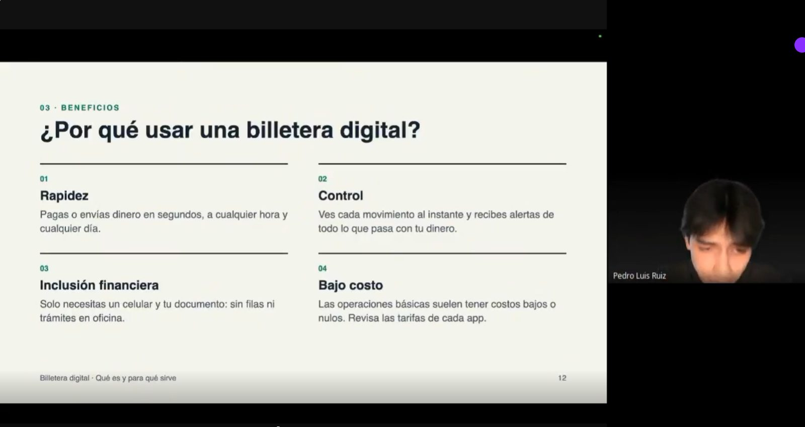
“Menos efectivo, más control sobre tu dinero: una billetera digital convierte tu celular en un banco de bolsillo, disponible a toda hora.”
Así vivimos la sesión
Presentación
Iniciamos con la bienvenida a los participantes, el propósito del encuentro y la agenda de 90 minutos. Para romper el hielo preguntamos: ¿cómo pagaste lo último que compraste?
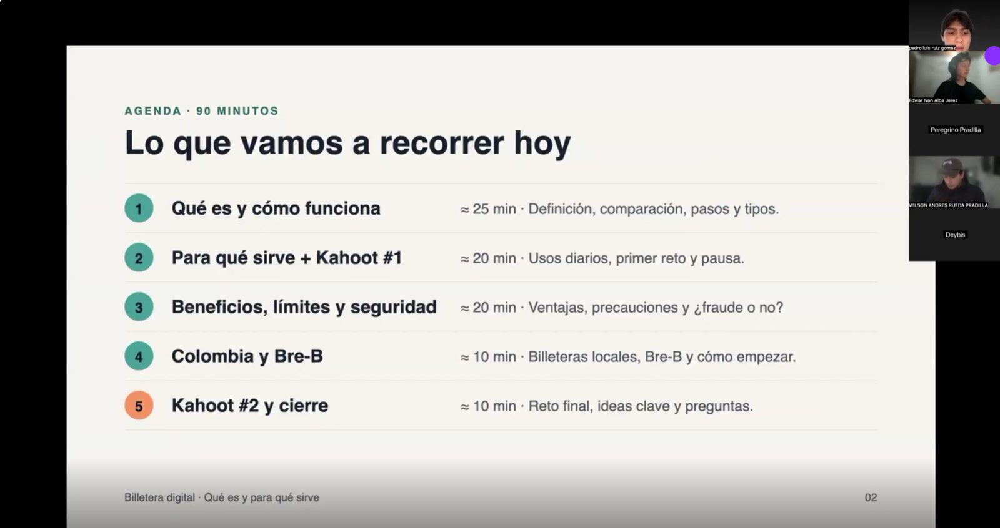
Explicación
Explicamos qué es una billetera digital: una aplicación que guarda, paga y mueve dinero. Luego vimos cómo funciona en cuatro pasos y por qué la tokenización protege los datos de la tarjeta.
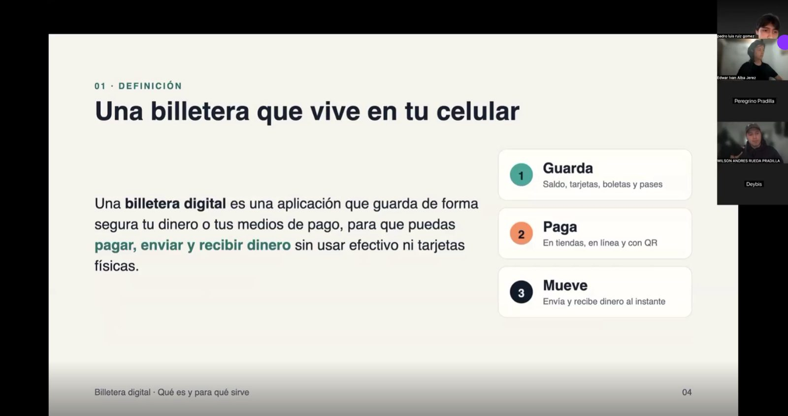
Actividad práctica
Pusimos a prueba lo aprendido con un reto de 10 preguntas de 20 segundos cada una. También analizamos casos de la actividad “¿Fraude o no? Tú decides”, como un mensaje de premio o una llamada falsa del “banco”.
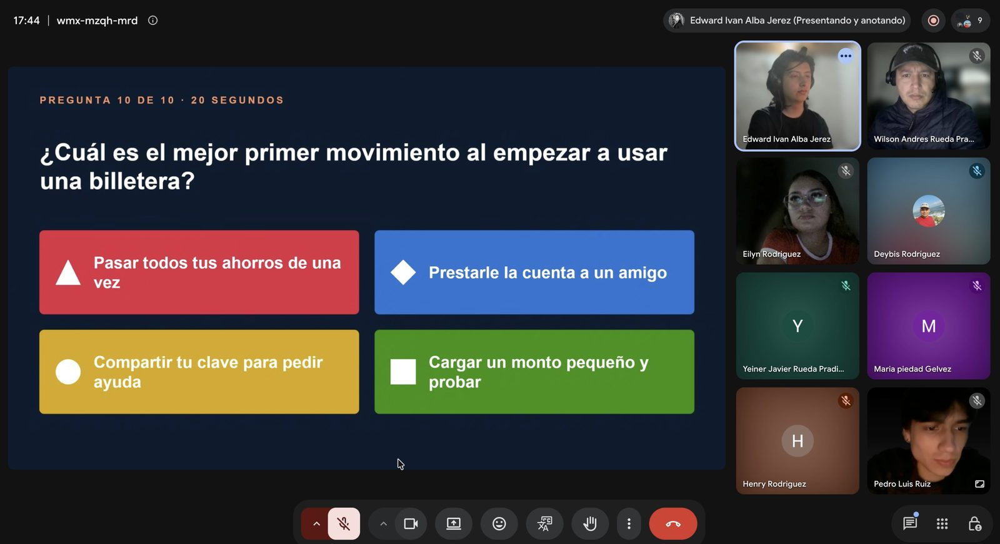
Cierre
Terminamos con tres ideas clave: es tu dinero dentro del celular; sirve para pagar, enviar, recibir y controlar tus gastos; y es segura si cuidas tus claves y usas apps oficiales. Cerramos con un espacio de preguntas.
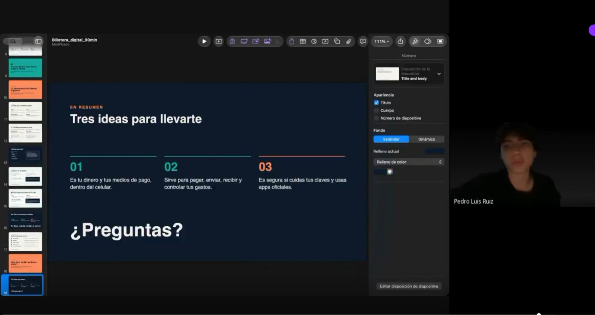
Reflexión de la sesión
Esta primera sesión nos dejó claro que enseñar a usar una billetera digital no es solo explicar una aplicación: es abrir una puerta a derechos y oportunidades que hoy pasan por el celular.
Desde la justicia social
La justicia social busca que todas las personas tengan las mismas oportunidades de acceder a los bienes, servicios y derechos de su sociedad. Hoy, pagar un servicio, recibir un subsidio o enviarle dinero a un familiar depende cada vez más de saber usar el celular. Quien no sabe hacerlo no se queda simplemente “atrasado”: queda excluido, depende de otros y está más expuesto a fraudes.
La brecha digital también es una forma de desigualdad.
Compartir lo que sabemos con nuestras familias y vecinos es una forma concreta de distribuir oportunidades: llevar a quienes han tenido menos acceso un conocimiento que, como estudiantes, solemos dar por sentado. También es un acto de reconocimiento: valorar las preguntas y la experiencia de cada participante, y entender que la dificultad no está en las personas, sino en una tecnología que no siempre se diseña pensando en todos.
Desde el desarrollo integral sostenible
El desarrollo integral sostenible busca que una comunidad mejore su calidad de vida en lo personal, lo económico, lo social y lo ambiental, y que esos avances se mantengan cuando el proyecto termine. En esta sesión eso se tradujo en algo concreto: que los 4 asistentes entendieran qué es una billetera digital, para qué les sirve en su vida diaria y cómo usarla sin caer en fraudes. Así aportó en cada dimensión:
Humana
Conocieron qué es una billetera digital y cómo funciona en cuatro pasos. Entenderlo es el primer paso para usarla sin miedo y sin depender de otros.
Económica
Vieron cómo pagar, enviar y recibir dinero, y aprendieron a reconocer fraudes como el mensaje de un premio falso o la llamada de un supuesto banco.
Social
Aprendieron junto a nosotros, sus familiares y vecinos, y ahora pueden compartir lo visto con otras personas de su barrio en Bogotá o Cúcuta.
Ambiental
Pagar facturas o enviar dinero desde el celular evita desplazamientos, filas y recibos impresos.
Lo más importante es que el aprendizaje sea sostenible: que cada participante pueda seguir usando su billetera por su cuenta y enseñarle a alguien más, sin depender de nosotros. Este trabajo se conecta con los Objetivos de Desarrollo Sostenible 4 (educación de calidad), 8 (trabajo decente y crecimiento económico, que incluye el acceso a servicios financieros) y 10 (reducción de las desigualdades).
Así fue nuestra sesión 2
Descarga, registro y configuración de billeteras digitales
Mi primera billetera digital: paso a paso para descargar, registrar y configurar Nequi y DaviPlata.
En esta segunda sesión nos enfocamos en lo práctico. Nuestro objetivo fue desarrollar habilidades digitales básicas en las personas adultas mediante la enseñanza de los procedimientos de descarga, registro y configuración inicial de billeteras digitales, para que se familiaricen con estas aplicaciones y ganen autonomía en el acceso a herramientas financieras digitales.
Trabajamos con dos aplicaciones: Nequi, de Nequi S.A. Compañía de Financiamiento, y DaviPlata, del Banco Davivienda S.A. Nos propusimos que los participantes lograran:
Identificar las tiendas oficiales de aplicaciones y el procedimiento para descargar e instalar una billetera digital.
Identificar los requisitos y datos necesarios para crear una cuenta en una aplicación financiera.
Comprender los pasos de registro y validación de identidad en Nequi y DaviPlata.
Realizar la configuración inicial de la aplicación, incluida la creación de la clave.
Fortalecer su confianza en el uso del celular y de las aplicaciones digitales.
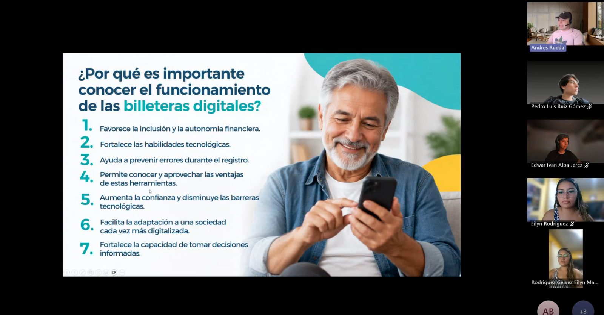
“Aprender paso a paso también es avanzar.”
Así vivimos la sesión
Presentación
Abrimos con el tema “Mi primera billetera digital” y compartimos los objetivos de aprendizaje: descargar, registrarse y configurar Nequi o DaviPlata con confianza.
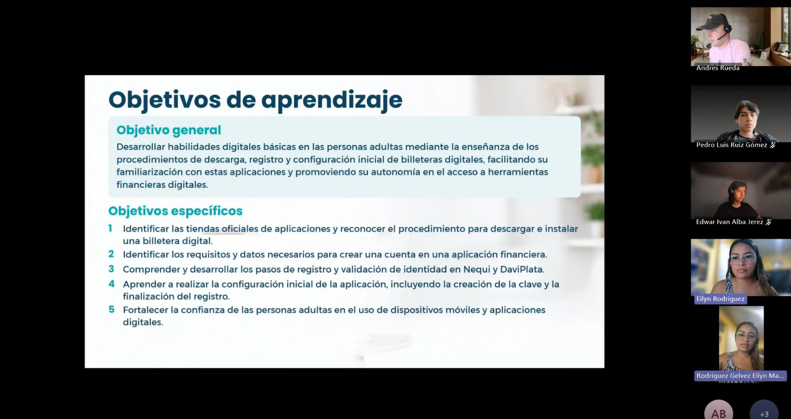
Explicación: descarga e instalación
Explicamos cómo descargar la aplicación en cinco pasos: abrir la tienda, buscar Nequi o DaviPlata, comprobar el nombre y el desarrollador, instalar y abrir. Insistimos en verificar siempre el desarrollador en la tienda oficial.
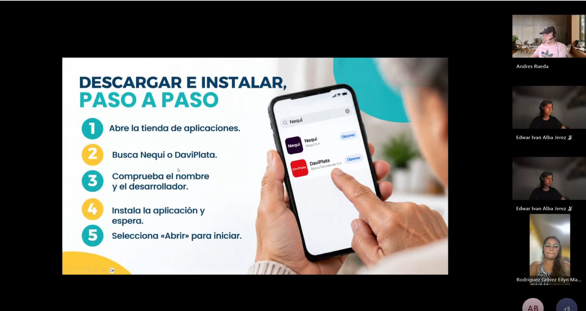
Explicación: registro en Nequi
Recorrimos la ruta guiada para crear una cuenta en Nequi: elegir el documento, confirmar el celular y el correo con sus códigos, capturar ambas caras del documento, hacer la validación facial y crear la clave.
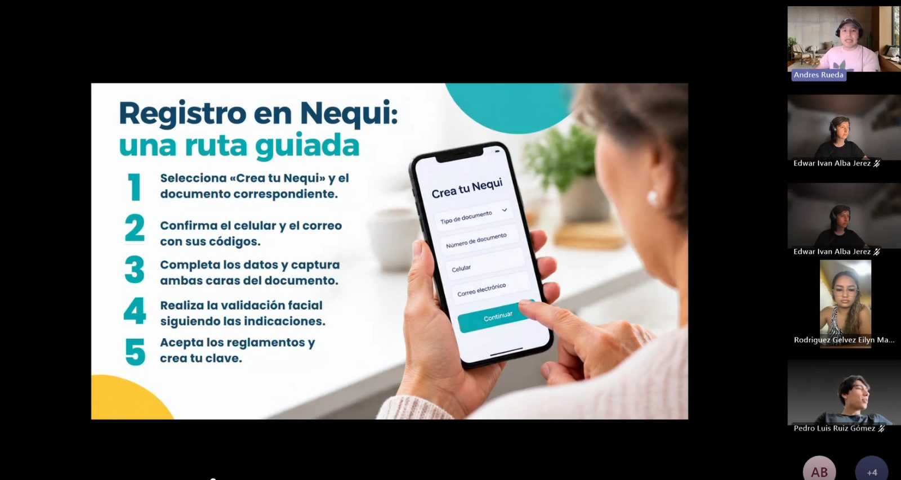
Explicación: activación de DaviPlata
Con base en las preguntas frecuentes oficiales de DaviPlata, vimos los diez pasos para activarla: desde “Nuevo registro” y el código por SMS o WhatsApp hasta la foto del rostro, la clave y el mensaje de bienvenida.
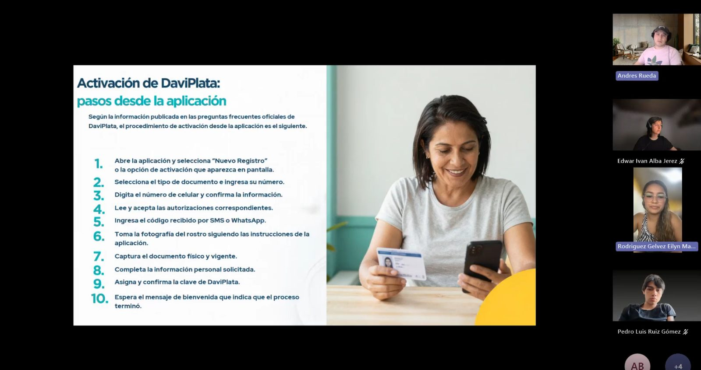
Explicación: validación de identidad
Dimos recomendaciones para validar la identidad: usar el documento vigente, tomar las fotos con buena luz y sin reflejos, y hacer la verificación facial solo desde la aplicación oficial.
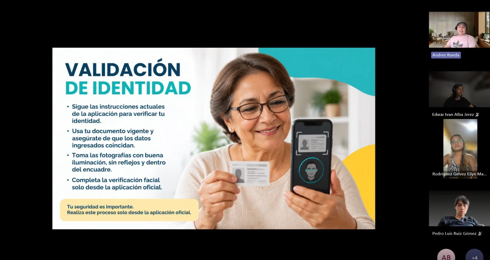
Explicación: configuración segura
Mostramos cómo configurar la billetera con seguridad: crear una clave que no se use en otros servicios, no compartir códigos, activar las opciones de seguridad y revisar los permisos y las notificaciones.
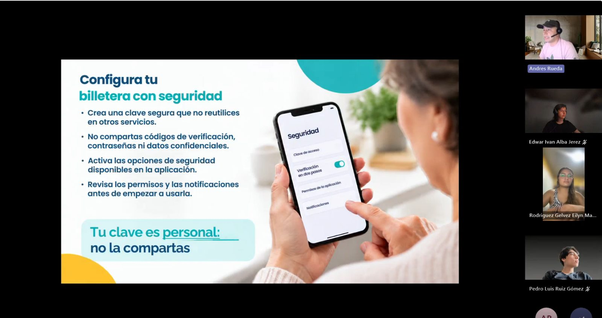
Actividad de refuerzo
Para reforzar lo aprendido comparamos Nequi y DaviPlata: qué documento piden, cómo llega el código de verificación, si exigen correo, cómo es la validación facial y cómo confirman el registro.
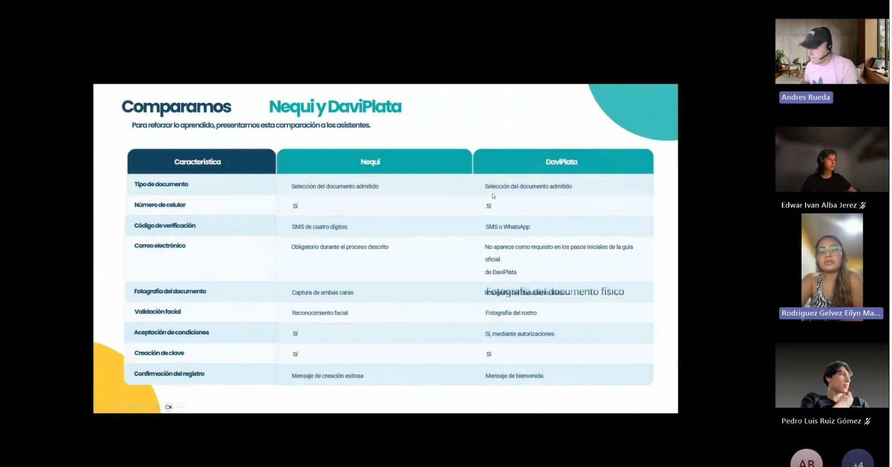
Cierre
Cerramos con cuatro recomendaciones: descargar siempre desde la tienda oficial, seguir las instrucciones vigentes del registro, proteger las claves y practicar con calma.
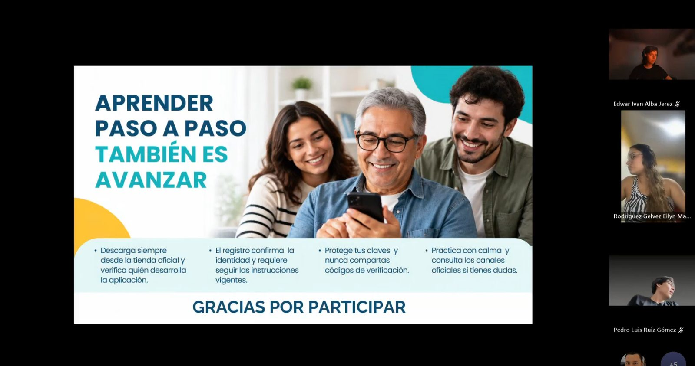
Reflexión de la sesión
Desde la justicia social
Para abrir una cuenta en Nequi o DaviPlata hay que validar la identidad con el documento y una foto del rostro, confirmar códigos por SMS o WhatsApp y crear una clave. Para quien está acostumbrado son pasos sencillos, pero para una persona adulta que nunca lo ha hecho pueden ser una barrera que la deja por fuera de los servicios financieros digitales.
Explicar cada paso con calma, y comparar las dos aplicaciones para que cada persona elija la que mejor le sirva, es una forma de equidad: que la falta de experiencia no le quite a nadie el acceso a un servicio al que todos tienen derecho. Además, enseñar a verificar el desarrollador y a no compartir códigos protege a quienes están más expuestos a fraudes.
Desde el desarrollo integral sostenible
Esta sesión dejó una ruta que los participantes pueden repetir por su cuenta: descargar la aplicación desde la tienda oficial, registrarse, validar su identidad y proteger su clave. Ese aprendizaje es sostenible porque no depende de nosotros: cada persona puede volver a hacerlo o ayudar a un familiar. En lo económico, una billetera activa les permite enviar y recibir dinero sin desplazarse; en lo humano, cada paso logrado refuerza su confianza para usar el celular.